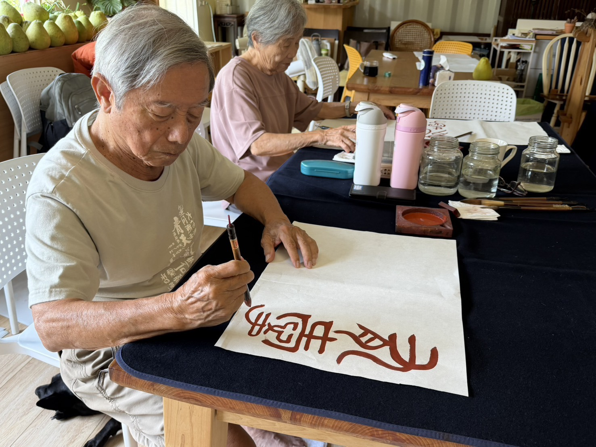
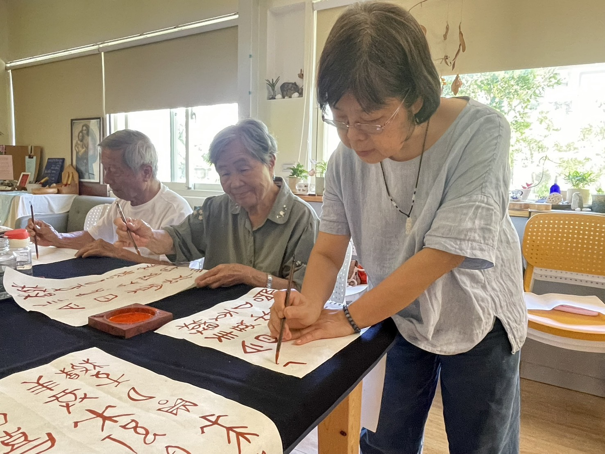
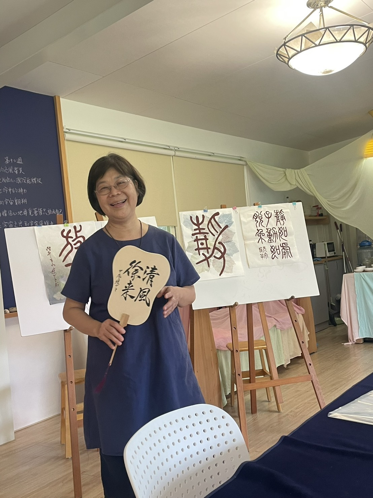

與字相遇的藝術旅程
每個字的背後，都藏著一段遠方的來路，
像火光落在骨上——甲骨的刻痕，仍在低聲說話。
每個字也都有自己的生命：
從刀刻的棱角，走到筆鋒的呼吸；
從古老的形，長出今日的意。
在這堂藝術性的書畫課裡，
老師以「畫字」的方式，帶你聽字的故事、看字的形變，
讓我們在日常的一撇一捺間，真實地與字相遇——
看見自己與字之間的牽引，
找回書寫最初的悸動與感動。

學員專注落筆，在水彩渲染間感受字的姿態

老師細心引導，陪伴大家一筆一劃與字對話
媛芊老師的書畫課，從甲骨文、金文到小篆，帶你回到文字最初的誕生現場。每堂課老師都會說一段字源小故事：這個字原本長什麼樣子？為什麼這樣寫？它一路走來變成今天的模樣，背後藏著哪些生活與想像——總讓人聽得心神嚮往，忍不住想知道更多。
更特別的是，老師以「濕水彩 × 篆書字形」引導書寫：不是只用黑墨臨帖，而是讓水與顏料在紙上流動，用色彩的濃淡、含水量與筆觸的停走轉折，去感受字的骨架、氣息與姿態——像在畫字，也像在和字一起呼吸。
課程有清楚的起承轉合，建議盡量全程出席，讓每一次練習與累積都連成完整的路徑，最後你會帶走的不只是作品，還有與文字更深的相遇。
課程資訊
⭐ 上課時間
周四早上 09:00 - 11:00
（建議全程出席，讓每次練習連成完整路徑）
⭐ 上課地點
五芒星星親子共學園
宜蘭縣三星鄉安農九路 560 號
⭐ 報名方式
歡迎私訊官方 LINE 帳號了解更多課程詳情與報名資訊。
老師介紹 ( Faculty )
書畫課程帶領人

黃媛芊 老師
1963年生, 新竹客家人。靚好文創小學堂負責人。
相關經歷
- 2003年曾任宜蘭社區大學篆刻教師。
- 2004年始擔任華德福書法水墨畫篆刻教師至今。
- 2011-2018年期間多次去中國大陸華德福相關學校分享書法、水墨畫課程。
- 曾在奈良、大阪、巴黎、廣州、台北、竹北、潮州、羅東及冬山舉辦書法、水墨畫、篆刻展。
邀您一起來安農溪畔感受漢字的生命流動
每周四早上 09:00-11:00，歡迎私訊官方 LINE 帳號了解更多。